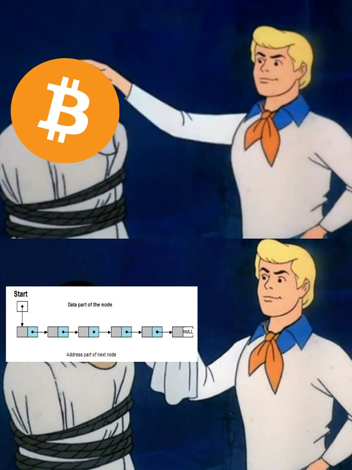
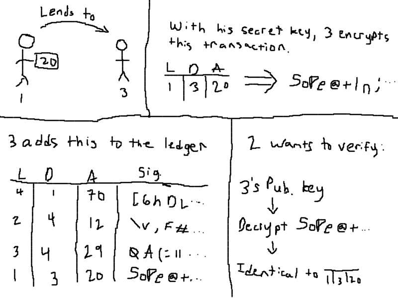

Table of Contents
1 "Blockchains are just spicy linked lists"

2 Helper functions
(defmacro operation= (operation operand value) `(setf ,operand (funcall ,operation ,operand ,value))))
3 Memes aside, what is a blockchain?
Most of the time when people ask how BitCoin works the answer they give them is simply "a blockchain". For many, this answer is good enough. However, I want to dive deeper and show how a person could make their own very basic cryptocurrency with a simple blockchain.
3.1 A blockchain is very simple. At its core, a blockchain is a technology that:
- Stores data
- Points to other data
- Does so securely
3.1.1 Sounds like a familiar data structure, doesn't it?
Well, yes, in a way it is identical to linked lists (if you have taken/know of data structures). However, instead of just pointing to the next list item blockchains typically have some way of verifying the order and integrity of the chain. This is done mostly through cryptographic functions like SHA-256.
4 Developing the idea of a cryptocurrency
4.1 The problem
You and your friends love to go out for lunch together. However, it seems like you are the one who is always paying for everyone else since everyone claims to have paid last time. If only there was a way to solve this terrible dilemma of contention!
4.2 The solution
In a stroke of amazing genius, you come up with the perfect solution. Instead of relying on memories that are manipulated by the subconcious to stop us from lending our money away, you convince your friends to start writing it down in a list.
On this list there will be three columns: a lender who lends someone money, a debtor who will accept that money, and then an amount specified.
Below is an example of one of these lists, also called a "ledger":
(defun random-from-range (start end) (+ start (random (+ 1 (- end start))))) (defun random-from-list (list) (nth (random (length list)) list)) (defun generate-random-ledger (names amount-min amount-max entries) (cond ((zerop entries) nil) (t (let* ((person1 (random-from-list names)) (person2 (random-from-list (remove person1 names))) (value (random-from-range amount-min amount-max))) (cons (list person1 person2 value) (generate-random-ledger names amount-min amount-max (1- entries))))))) (setq *people* '(max henry katherine thomas emily)) (setq *ledger* (generate-random-ledger *people* 5 20 10)) (princ (cons '(lender debtor amount) *ledger*))
After a given amount of time like a week or month, you and your friends decide to find out how to pay everyone back. To do this, you look at the total amount each person has spent on another. Then, each person pays their share into the pot or takes their share out of it.
For the above example, here is the amount each person will take from the pot (negative means they need to give to the pot).
(setq *balances* (make-hash-table)) (loop for x in *people* do (setf (gethash x *balances*) 0)) (loop for x in *ledger* do (progn (operation= #'- (gethash (cadr x) *balances*) (caddr x)) (operation= #'+ (gethash (car x) *balances*) (caddr x)))) (defun hash-table-to-alist (hash-table) (setq alist '()) (maphash (lambda (k v) (setq alist (cons (list k v) alist))) hash-table) alist) (princ (hash-table-to-alist *balances*))
4.3 Another problem
This is all well and good, but what is stopping Malicious Max from adding an entry like:
| MAX | EMILY | 100 |
to the ledger? Right now, the answer is absolutely nothing. Malicious Max could get away with anything!
If you're confused why this is in Max's favor since it seems like Max is giving away his money to Emily, we have to remember that this is not being taken into account until the group does their tallying up at the end of the predetermined period. So by doing this Max is forcing Emily to put more of her money into the pot, which he gets to take away from.
4.4 Another solution
Well, if you know anything about security these days you might try using a public/private key signature scheme such as RSA. Let's take a look at how we could use something like RSA to secure our ledger.
First of all, let's stop using names of people and use indices instead.
(setq *people-indices* '()) (dotimes (n (length *people*)) (setq *people-indices* (cons (list (nth n *people*) n) *people-indices*))) (princ *people-indices*)
This way we will be able to rewrite our ledger like so:
(setq *numeric-ledger* (mapcar (lambda (arg) (princ (list (cadr (assoc (car arg) *people-indices*)) (cadr (assoc (cadr arg) *people-indices*)) (caddr arg)))) *ledger*)) (princ *numeric-ledger*)
Now, we can start discussing how we should "sign" these transactions.
Our goal is to have someone be able to add a line to the ledger only if they have the person they are paying to's verification. One way to do this is by generating RSA keys for everybody on the ledger. Then when they get paid by another person, they encrypt the transaction with their secret key and place that encrypted transaction along with the plain transaction onto the ledger. Since anyone has access to the public key, all that is needed to do to verify this transaction is to make sure the transaction and the encrypted message (which is decrypted by the public key) are the exact same. This makes it practically impossible for anybody to lend money to another without their secret key.
That was a lot, so here is a visual representation of what this means:
4.4.1 We have visual

I sort of lied before about how we check with the public/private keys. Instead of actually encrypting the whole entry, we encrypt its hash (this is called signing). A hash takes some kind of message and produces a random string as a (nearly) unique output for that given input. With a good hashing algorithm there is practically no way to find the original message from its hash.
This idea of hashing is further critical when making a real blockchain.
4.5 Malicious Max is back at it again!
There's still a problem with this scheme to verify transactions. Let's say that at some point Max lent 20 dollars to Henry. Max could easily just copy that transaction over and over again. The solution to this is to include an index or some sort of timestamp within the ledger, that will make the hash change and thus also change the signature for each new transaction.
4.6 Couldn't anybody just tamper with the ledger?
Yes. This is the actual meat and bones of the idea behind a blockchain. As we discussed the hash function earlier, we can put this to good use to stop attempts to tamper with the blockchain. The way we do this is by adding the previous block's hash into the current block. When we do this we guarantee that whenever somebody wants to mess with the order of the blockchain, they would have to regenerate all of the blocks that come after it. This itself is not hard, but if we include the idea before of signing a block when it is added, this becomes ultra-secure as somebody would have to have access to that person's private key to generate a new signature for that hash.
4.7 Going further
The main upside to cryptocurrencies is the fact that they are decentralized. Right now, our blockchain relies on us having one single blockchain that is available to each person to add blocks to. But if whoever owns that place where people add blocks to the chain wants to tamper with the chain, they very much could. To prevent this, many cryptocurrencies implement a protocol based on proof-of-work to ensure that this can not happen.
If you're confused by any of the discussion before this, fear not. There is a great video on youtube by 3b1b that goes deep into the theory of everything behind BitCoin and other cryptos.
5 Terminology in cryptocurrencies
Now we step away from the more technical side of crypto and look at some of the terminology that you will come across when viewing content about crypto:
5.1 Wallet
This is nothing more than your private key being hashed. It can be through software or hardware, but it is what is used to keep your assets from being reached by other malicious people. Most of them also create an address, which is essentially your public key that people will use to send you money
5.2 Fiat
This is currency actually minted by a government.
5.3 Mining
Let's talk about this; this is how proof-of-work is implemented.